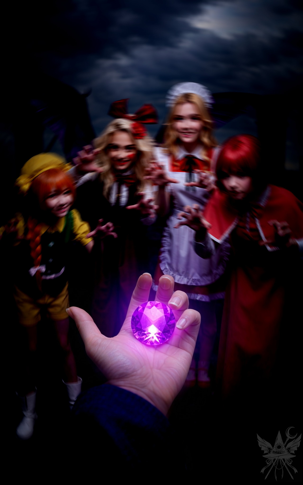
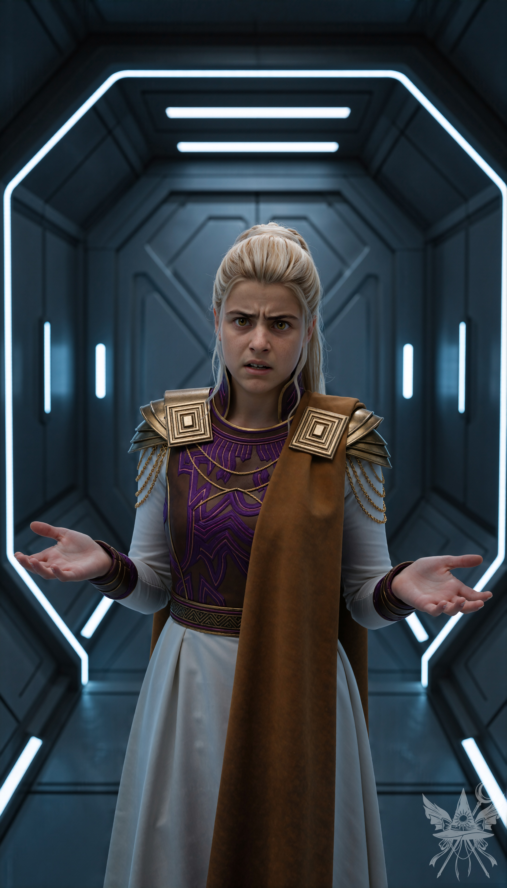
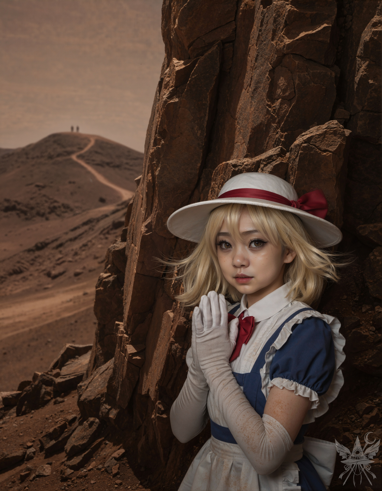

真珠のように滑らかな石の表面から、微かな、しかし確かな温もりが掌へと伝わってくる。握りしめた瞬間、それが世界の全てであるかのような強烈な全能感に脳髄が痺れた。遠い昔に置き忘れてきた半身をようやく取り戻したような、甘く深い安堵。だが次の瞬間、その心地よさは泥のような猜疑心へと反転した。
周囲にいる者たちが、ただの目障りな障害物に成り下がる。排除すべき敵の群れ。
夢美は冷静を装ってはいるが、その奥底に爛々と燃える野心を隠し切れていない。間違いなく、この石を自身の星へ持ち帰り、学会への復讐の道具にする腹だ。助手のちゆりも同様。平然と鈍器で人を殴りつけるような狂犬の底抜けの明るさの裏には、底知れぬ闇が渦巻いている。信用などできるはずがない。
視線を滑らせる。翼を負傷したエリス。どうせ同情を引くための偽装だろう。生まれついての盗癖を持つ悪魔が、この強大な力を狙っていないわけがない。そしてオレンジ。あの狂気に近い衝動性と意味不明な言動……。
誰も彼もが、油断ならない簒奪者だ。

冷たく湿った暗闇の中で、掌から放たれる紫色の光だけが特異な熱を持っていた。その禍々しい輝きに照らされた仲間たちの姿が、極端に歪んで迫り来る。誰もが牙を剥き、薄ら笑いを浮かべながら、その鋭い爪をこちらへ突き立てようとしている。逃げ場のない圧迫感と妄想が、精神の奥底まで確実に侵食していく。
「メデたん？ ねえ、メデたん！」
弾けるような声が、鼓膜を震わせた。視界の歪みが一瞬だけ晴れる。
「ちょっと、メデっち。そんな顔してると、本当に自分の子供を殺して鍋で煮込んだ魔女みたいよ。まさか……あんた、本当にそんな趣味があるわけ？」
エリスが一歩後ずさりし、露骨な警戒心を向けた。
「メーデイアは濡れ衣よ！」
反射的に一歩踏み込んでいた。右手にあるクリソプレーズに水色の魔力を注ぎ込み、今まさに目の前の悪魔を粉砕しようとした、その刹那。
（なんてことを……！ アメジストが、私の心を……！）
凍りつくような悪寒が背筋を駆け下りる。我に返り、荒い息を吐き出した。
「エリス、ごめん。この石……私が持ってちゃダメみたい」
肺にこびりついた毒を吐き出すように呟き、顔を上げる。
「オレンジ。地獄に着くまで……この石を、預かって」
「わたしに？ う、うん……わかった。メデたんが決めたことなら！ 任せて！」
戸惑いながらも、オレンジは真っ直ぐな笑顔で石を受け取った。掌から温もりが消え去ると同時に、張り詰めていた狂気が嘘のように霧散していく。小さく息をつき、残ったクリソプレーズを無言でメイド長へ差し出した。
夢子は恭しくそれを受け取ると、横たわる遺体の胸元へと近づけた。流麗な身のこなしからは想像もつかないほど荒々しい力で、硬質な宝石を素手で粉砕する。砕け散った粉末が遺体に降り注ぐと、メイド長は静かに蓮華座を組み、天を衝くような眩い白光を放ち始めた。
周囲の空気が、まるで濃密な液体のように重く粘り気を帯びて全身に絡みつく。これまで行使してきたどの魔術とも次元が違う、圧倒的で原始的な力が空間を支配していた。
光の波が収束すると、死の縁にあったはずの少女はゆっくりとまぶたを震わせた。顔に赤みが差し、先ほどの凄惨な衰弱の痕跡は消え失せている。勢いよく上体を起こすと、猛禽類のように鋭い視線で周囲を射抜いた。
「一体何が起こったのじゃ！？ キクリ様は！？ 女神様はご無事か！？」
パニックに陥り、今にも駆け出そうとする彼女の肩を、メデアが力ずくで押さえ込む。
「ユゲミアさん、落ち着いて。キクリ様は大変な状況です。ゆっくり説明している時間はないけれど、一緒に彼女を助けに行きましょう」
「何故わしの名を知っておる？ ここは一体……？ 何が起こったと言うんじゃ！？」
轟音が大気を震わせ、氷のように冷たい豪雨が容赦なく地表を叩きつけ始めた。荒れ狂う暴風雨の中、メイド長の鋭い声が響く。
「メデア様、時間がありません。至急、船へお戻りください。軍隊が間もなく到着します。ここは、私が食い止めます」
迷っている暇はない。夢子に深く一礼し、泥濘む地面を蹴って宇宙船へ急いだ。オレンジと夢美が意識のないちゆりを支え、混乱の極みにあるユゲミアもそれに続く。重力場に捉えられ船内へ引き上げられる瞬間、地平線の彼方に、あの忌まわしい悪魔の大軍の気配を確かに感じ取った。
（……間に合った！）
冷涼な空調の効いた操縦室へ飛び込むと、すでに夢美が操縦桿を握り、計器類と格闘していた。分厚い窓の向こうでは、重力と暴風に逆らい、メイド長がたった一人で絶望的な数の群れを迎え撃つ姿が見える。だが、船体は猛烈なGを伴って急上昇を開始し、わずか数十秒後には暴れ狂う魔界の空を完全に突破していた。
静まり返った船内。る〜ことが浮遊ストレッチャーを無機質に操作し、ちゆりを医務室へと運んでいく。翼から血を流すエリスも、舌打ちしながらその後を追った。一方のオレンジはどこからか紐を引っ張り出し、鼻歌交じりに小さな袋を編み始めている。近づけば、再びあの石を奪い取りたいという抗いがたい衝動が胸を叩く。奥歯を噛み締め、必死に目を逸らした。
「ちょっと、あなたたち」
苛立ちを隠そうともしない、冷ややかな声。夢美がパネルから視線を外さずに告げた。
「ちゆりが燃料を見つけてきたから、る〜ことから受け取って補給してちょうだい。このままじゃ、遠くまで飛べないわ」
この極限状況下では、その不機嫌さも無理はない。ユゲミアへ視線を向け、小さく顎で先を促した。
（二人で行かなきゃダメなのか……？）
無機質な灰色のパネルが続く、閉鎖的な空間。低いハム音が鼓膜を圧迫する中、ユゲミアは見たこともない計器や配管の群れを、警戒心も露わに睨みつけていた。
「……もう我慢ならん！ 一体何が起こっておるんじゃ！ 説明せい！」

無菌室のように乾ききった冷気が、肌を刺す。青白い照明が均等に照らし出す金属の廊下で、彼女は両手を広げ、激しい当惑と抑えきれない憤怒を叩きつけてきた。未知の領域に放り込まれた恐怖を、怒りで覆い隠している。
「ええ。まず、ユゲミアさんは、ご自身のことを覚えていますか？」
「わしのことか？ わしはキクリ様の相談役で、国務を……ああ、キクリ様との祝いの最中に、何か奇妙なことが起こったことは覚えておるが……」
「つまり……ご自身が、あの巨大な目玉の怪物に変身したことは……覚えていない、と？」
「何じゃと！？ さっぱり分からん！ もっと詳しく説明せい！」
押し問答を続けるうちに、医務室へたどり着いた。ストレッチャーの上では、汚れを落としたちゆりが浅い呼吸を繰り返し、る〜ことが事務的かつ完璧な手際でエリスの翼の縫合を行っていた。
「エリス、翼の具合はどう？」
「平気よ。死にゃしないわ」
こちらを見ようともせず、エリスは吐き捨てるように答えた。その態度が、ただでさえ限界だったユゲミアの怒りに火をつけた。
「ちくしょう！ いい加減にせぇ！ お主らは一体何者で、ここはどこなんじゃ！」
「ユゲミアさん、落ち着いてください。ここは宇宙船の中です。私は異世界から来た魔女、メデア。ユゲミアさんとコンガラが、キクリ様の王冠からあのアメジストを取り出した後……キクリ様は封印され、何年もの間、冷たい壁に埋め込まれたままなんです」
「キクリ様が……？ 創造主が封印されるなど……そんな……まさか！ それじゃあ……菊界は……滅んでしまう……！」
「ええ……残念ながら、かつての菊界はもう存在しません」
絶望に膝を折り、両手で顔を覆う彼女を、ただ冷徹に見下ろすことしかできなかった。
背後で微かな駆動音が鳴り、る〜ことが無言で黒いバッグを差し出してきた。受け取ろうとして、その異常な質量に思わず顔をしかめる。優に数十キロはある。メイドロボットが淡々と補給手順を読み上げるのを聞き流し、再びユゲミアへ向き直った。
「お気持ちは分かります。でも、今は嘆いている暇はない。私たちはキクリ様を救い、世界を復興させるために動いているんです」
「……ならば、わしはそのために何でもいたしましょう」
顔を上げた彼女の瞳に、仄かな決意が宿る。
「では、これを」
間髪入れず、極厚のキャンバス地の持ち手を突き出した。
二人で床を引きずるようにして、重厚なバッグを運ぶ。魔界の引力圏を完全に抜け切っていないのか、手足が鉛のように重い。
「……そなたは一体、どこでその事実を知ったんじゃ？」
「運命のいたずらで、かつての菊界……今は『地獄』と呼ばれている場所へ飛ばされたんです。そこでキクリ様の幻視に触れました。アメジストが魔界にあること。そして……菊界が崩壊していく過程を、まざまざと見せつけられました」
「菊界に……一体何が起こったんじゃ？」
「すべてが灰に覆われていました。でも、一番興味深いのはユゲミアさん自身ですよ。コンガラにアメジストを弾き飛ばされた瞬間、あなたは五つ目の怪物へと変貌し、すべてを破壊したんですから」
「……そうか……」
消え入るような声で呟くと、彼女は再び固く口を閉ざした。
機械室の奥で、指示通りに三角形の刻印があるパネルを操作する。二人掛かりでバッグの底を持ち上げ、金属のトレイへ中身を滑り落とす。石炭のように鈍く黒い光を放つ鉱石。見た目に反する凄まじい密度だ。トレイを押し込むと、低い稼働音と共に、身体を縛り付けていた見えない重りがフッと消え去った。重力制御が正常化したらしい。
安堵の息を細く吐き出し、ユゲミアと共に操縦室へと踵を返した。
操縦室に戻ると、小さな椅子でオレンジが子猫のように紐を弄っていた。首元には不格好な手編みの袋が下がり、その網目から禍々しい紫色の光が微かに漏れ出ている。
「メデたん、見て見て！ わたしが編んだバッグ！」
「すごいじゃない、オレンジ。器用なのね」
「えへへ！ ある人に教えてもらったんだ。幻想郷の『ふわふわ』って面白いお店に、これくらいちっちゃい魔女が住んでてね」
彼女は自分の胸の高さに手をやり、背丈を示して笑う。
「エレンのこと？」
「うん、でも教えてくれたのはそこの屋根裏に住んでたポルターガイストの子。いろんなドレスを縫ってて、色々教えてくれたんだ。しばらく一緒に遊んでたんだけど……」
彼女は少しだけ目を伏せる。
「どっか行っちゃって、ずーっと会えなくて寂しいの。また会えるかなぁ？」
「きっと会えるわ。いつか必ずね」
向かいの席では、ユゲミアが押し黙ったまま考え込んでいた。当の夢美は気にも留めず、自動操縦に切り替えた端末へ凄まじい速度で文字を打ち込み、眉をひそめている。
「燃料補給、終わりましたよ」
「ご苦労さん」
画面から視線も外さず、吐き捨てるように返す。
「あの、何をしているんですか？」
「ちょっと、必要な作業よ」
これ以上は踏み込ませないという、ぶっきらぼうで冷たい拒絶の響きがあった。
自室の布団へ倒れ込み、泥のような微睡みに落ちかけたところで、無機質な声に意識を叩き起こされた。
「昼食のご用意が整いました」
る〜ことの淡々とした報告に従い、狭いキッチンへ向かう。そこには椅子が三つ追加され、六人全員が窮屈そうに収まっていた。テーブルにはケルベロスの肉と野菜を煮込んだスープが並べられている。ひどく獣臭いが、飢えを凌ぐには十分だ。
驚いたことに、腕に痛々しい包帯を巻いたちゆりも、翼を引きずるエリスも、平然と席についてスープをすすっていた。
「オレンジ、音を立てない。行儀が悪いわよ」
限界を迎えた夢美が鋭く注意する。
「ごめんなさい、わじゃとじゃまいの！」
「それに、口にものを入れたまま喋らないでくれる？」
今度はエリスが眉をひそめ、嫌悪感を露わにした。
「まったく、見てられないわ。あんな危険なものを持ち歩いてるのに、まるで子供じゃない」
オレンジはスプーンを置き、しょんぼりと目を伏せる。
「メデたんが持っててって頼んだんだもん。わたし、悪くないよ……」
「悪いと思うわ。こっちは戦いでボロボロなのに、あんただけ呑気な顔して。もしかして、その無邪気さも全部演技？ アメジストを手に入れて、アタシたちを騙すつもりなんじゃないの？」
「もういいわ。落ち着いて食べましょう」
険悪な空気を強制的に断ち切る。頭が割れそうなほどの雑多な思考と、仲間内の疑心暗鬼の連鎖をどうにか収めなければならなかった。
食後、夢美に案内された部屋に戻ると、手元に置いていたはずの魔導書が消えていた。またか、とため息をついて廊下へ出ると、怪我を押して巨大なバッグを引きずるちゆりの姿があった。
開いたドアの隙間から覗き込むと、部屋の隅にはガラクタの山が詰め込まれたバッグが二つも転がっている。
「あ、メデア。気付かなかった。色々ありがとね」
疲労の色を滲ませながら、ちゆりが笑う。
「ううん、こっちこそ。助けてくれてありがとう」
「だって、魔法教えてくれたし、いろんなことも見せてくれたし」
「ちゆりの才能よ。ところで、そのバッグは何？」
「これ？ 別に……荷物整理しようと思って」
彼女は誤魔化すように視線を逸らした。
不審に思いながら部屋を後にすると、ドアの前でエリスと鉢合わせた。
「エリス、私の本を見なかった？」
「ああ、あれ？ すっごく面白かったわ！ もう読んだから返す」
悪びれもせず本を押し付けると、彼女はさっさと背を向けて歩き去った。どいつもこいつも、腹の底で何を企んでいるのか分かったものではない。
疲労の限界を迎え、オレンジとユゲミアがすでに眠りについている布団の空きスペースへ潜り込み、深い眠りに落ちた。
＊＊＊
「メデたん！ 着いたよ、起きて！」
肩を激しく揺さぶられ、目を開ける。いつものようにオレンジが覆いかぶさるように覗き込んでいた。
ユゲミアの姿はない。急いで身支度を整え操縦室へ向かうと、窓の向こうには見覚えのある荒涼とした赤茶色の世界が広がっていた。一面に広がる乾いた岩だらけの地獄の光景に、ユゲミアは張り付くように外を見つめている。
「よく寝るわね、メデっち。着いたわよ。どこかは知らないけど」
「大丈夫、目的地は合ってるわ。さっさと降りましょう」
エリスのぼやきを遮るように、夢美が冷たく言い放つ。
最初に船外へ降り立ち、乾燥した土埃の匂いを肺へ吸い込んだ。少し歩くと、遠くの方に静かなる神殿のシルエットが浮かび上がる。だが、その周辺で繰り広げられている光景に、思わず息を呑んだ。
（まさか……こんな大規模な戦闘が……！）
明羅とエリーが刃を交え、周囲を無数の幽霊兵士と翼を持つ悪魔たちが埋め尽くしている。後から降りてきた仲間たちも、その凄惨な殺し合いの喧騒に言葉を失い、ただ見守るしかなかった。
首都の遺跡は、上り坂のすぐ先にある。どこから接近すべきか周囲を窺っていると、岩の陰からひっそりと声がした。
「メデア？ こっちよ。心配しないで、武器は持っていないわ」
戦闘に釘付けになっている他の者たちから少し離れた岩の陰。そこに、カナ・アナベラルが立っていた。

かつての清潔でメルヘンチックな装いとは打って変わり、衣服の随所には周囲と同じ赤茶色の乾いた土がこびりついている。過酷な荒野を自らの足で歩き回ってきた証拠だ。周囲の喧騒から完全に切り離されたような奇妙な静寂の中、彼女は祈るように指を絡ませ、こちらを真っ直ぐに見据えていた。
「何の用ですか、カナ。もう騙されませんよ」
警戒を露わにし、声を潜める。
「そんなつもりはないわ。逆に、助けたいのよ。ほら……」
彼女は背後の仲間たちを顎で示した。
「あなたの仲間の中に、裏切り者がいる。アメジストの力を手に入れて、世界の復興を邪魔しようとしているの。このままじゃ、あなたが危険よ」
胡散臭い言葉に顔をしかめると、彼女は冷ややかな、しかし妙に説得力のあるトーンで言葉を継いだ。
「わかるでしょう？ 私だって、キクリがこの世界に戻ってくるのは利益になるの。あなたが裏切り者と一緒にあの遺跡へ向かえば、背後から必ず刺されるわ」
「……で、その裏切り者というのは、誰のことです？」
「おい！ 誰とコソコソ話してんだよ！」
背後から荒々しい羽音がして、エリスが舞い降りてきた。鋭い視線が岩陰へ向けられるが、そこには乾いた風が吹き抜けるだけで、カナの姿はすでに跡形もなく消え去っていた。
[SYSTEM ALERT: 音響兵器デプロイ完了]
▼ 本章の絶望を1000%味わうための専用聴覚データ ▼
■ YouTube：『Crimson Logic （クリムゾン・ロジック）』